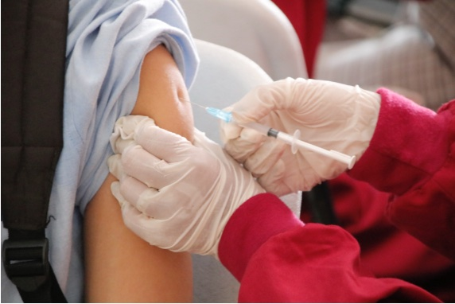

Mientras la ciencia discute si la COVID-19 ha entrado en una fase endémica; diversos países ya la tratan como tal.

La enfermedad va a seguir con nosotros y la evolución futura del virus nunca es fácilmente predecible, pero los planteamientos
científicos han variado desde la crisis inicial. Ahora preocupa sobre todo la cóvid larga o persistente, sobre la cual
esperaremos nuevos detalles este año. Y en el terreno de las vacunas, el progreso de las nuevas formulaciones intranasales
y orales podría marcar la diferencia, si alguna de ellas llega a superar los ensayos clínicos con una inmunidad esterilizante
que impida el contagio.En el lado positivo, el rápido desarrollo para la covid de las primeras vacunas de ARN autorizadas en
humanos se está aplicando ahora contra otras enfermedades virales como la gripe o el herpes zóster y genital, bacterianas
como la tuberculosis o parasitarias como la malaria. Incluso el cáncer es ahora un objetivo para las vacunas de ARN y este
año podríamos esperar avances en ensayos clínicos en ese terreno.
Fuera del campo de las enfermedades infecciosas, la biomedicina espera la posible aprobación de la primera terapia génica con
la herramienta de edición genómica CRISPR. El tratamiento, llamado exagamglogene autotemcel (exa-cel), actúa modificando
genéticamente las células madre del paciente, y se ha mostrado eficaz en los ensayos clínicos contra dos enfermedades congénitas
de la sangre: la anemia falciforme y la beta talasemia. Por último, en 2023 tanto Europa como EEUU resolverán si autorizan
el uso clínico del lecanemab, un anticuerpo monoclonal testado contra el alzhéimer y sobre el que existe una gran controversia
en cuanto a su eficacia y seguridad.